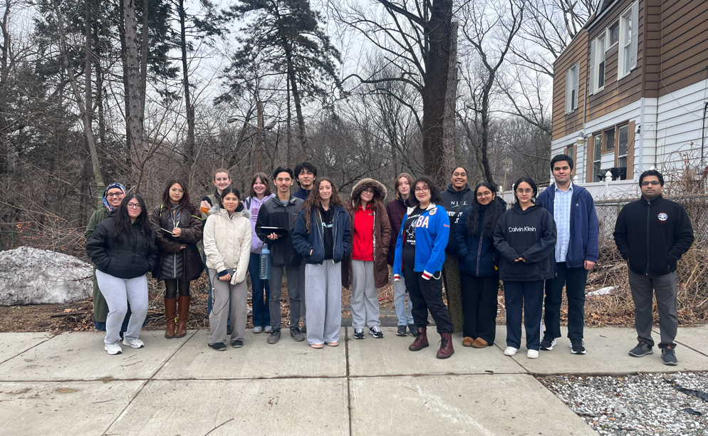
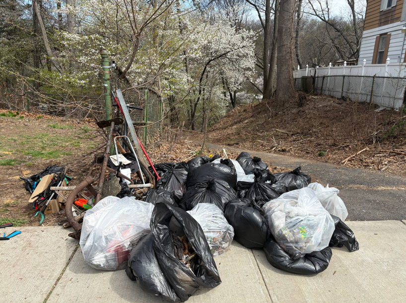
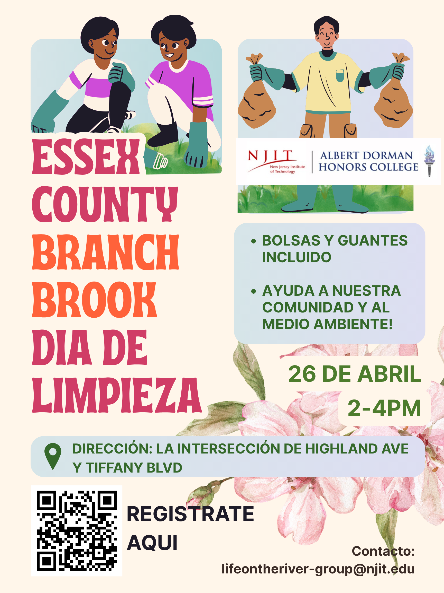

Life on the River Community Engagement
Connecting each team with the visions and concerns of the real community members that their work is targeting.
Team Leads: Avery Green and Julia Navarro. Team Members: Ligaya Manalastas and Kaily Peixoto

Though I started on Project 1 as the sole community engagement lead and member, I soon became a part of Project 2's Community Engagement Team. Through this, my team and I made consistent efforts throughout the semester to gain community input on the work of all the other teams and translate this progress to the community as they are the ones most impacted by everything in our project. I also worked on this project in my fall semester, so I carried that community engagement knowledge with me.
Digital Survey
I decided to design a digital survey that could be distributed to the anyone living around the Second River. It's final iteration contained 10 questions, 2 demographic ones paired with 8 questions directly related to the river as well as the general space around it. We incentivized responses with a $5 giftcard for the first 20 people to answer. In the end we only received 5 formal survey responses, but much more unstructured data from conversational interviews based on the questions in this survey. Next time I would ideally make the survey online-only and email digital giftcards as a reward, in order to maxmize responses and reach, as we were only on site sometimes but flyers could be present 24-hours a day.
April 4th Cleanup

Our first cleanup was a great event. We spoke to many community members, even some who were cleaning up, such as a couple seeking to take engage photos in the park. One conversation that stood out to me was with Connie, who invited me and Dr. TBA into her home and showed us old postcards of places in Newark, including Branch Brook Park and the Second River. She spoke about how no one was willing to take accountability for the illegal dumping that was polluting the site, as people tend to blame each other. With the cherry blossoms in bloom, I could really see the potential in the site that day. So could the community members, as they placed sticky notes with their suggestions on a map of designs by the Site Analysis and Design team. I spoke to JV of the Ironbound Community Corporation, whom I've met before, and JV wrote about the desire public art in the space. It was an informative event that helped us improve our projects and planning for the next cleanup.
April 26th Cleanup

For this flyer, I tried to make it more visually pleasing and original than the last. Both cleanups had flyers in English and Spanish. We managed to get more volunteers for our second cleanup and picked up around 10 pounds of trash. The Branch Brook Park Alliance attended, and we discussed the possibility of a rain garden at the entrance. This was the day each team brought artifacts to show case to the community, including a physical model of the space and a mini biochar demonstration.
Liz Del Tufo Interview
After gathering her contact information from a resident by the river, (Connie), I called 95 year-old recently retired historian Liz Del Tufo. I was able to meet with her and her friend, Newark-based author Linda Morgan, at Mrs. Del Tufo's Forest Hills home with Professor TBA. We sat with these 2 women, both with a wealth of knowledge about Newark's past, present, and future, and listened intently. Mrs. Del Tufo used to serve on the board of the Branch Brook Park Alliance and shared valuable information on the park's history, Newark's historical sites, the evolution of Newark, and much more. I'm grateful to have met with them both.
Honors Interdisciplinary Research Forum

I presented the semester's work with my team at the Honors Disciplinary Research Forum on 5/1/26. We displayed the poster above as we summarized our journey of engaging the community and collecting essential data on resident's opinions of the space. We communicated our findings with peers, professors, and guests such as the provost of NJIT and a Community Liasion from the NJDEP.
Lessons Learned
I am very grateful to have continued working on community engagement by the Second River for a second semester. I feel that this semester we made much more progress and interacted with more community members than last time, so I feel our outreach methods are only improving as the project goes on. I feel that I have learned about the main concerns of residents around the Second River as well as strategies that could be implemented to record community input for future projects. As I seek to work in a community or user-focused role in my professional life, I will carry these engagement experiences with me and hope to apply them elsewhere.